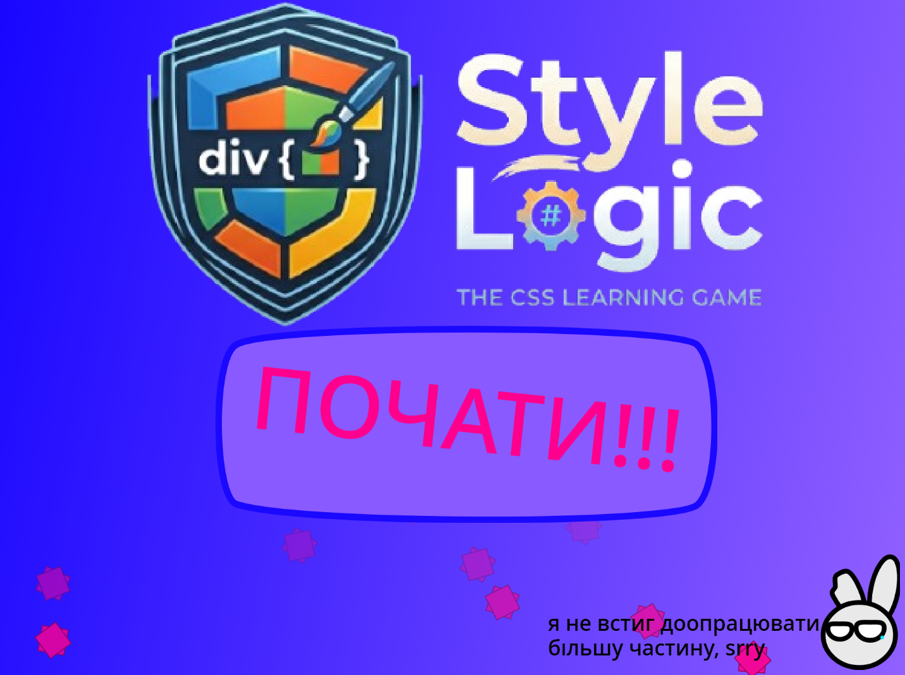
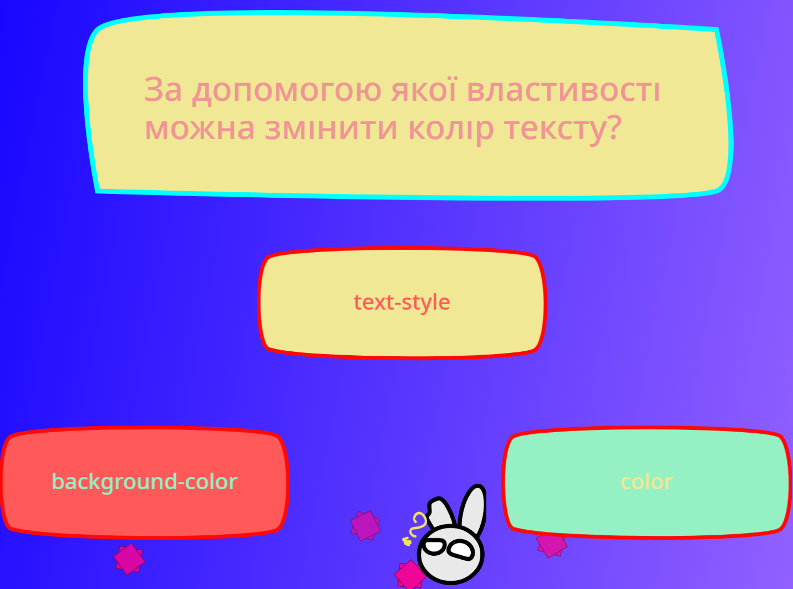

Game Project
Style Logic — це інтерактивний тренажер для перевірки ваших знань із CSS. Гра містить 12 запитань, кожне з яких має три варіанти відповіді. Це чудовий спосіб кинути виклик самому собі, відшліфувати навички верстки та позмагатися з друзями за звання найкращого знавця стилів.

